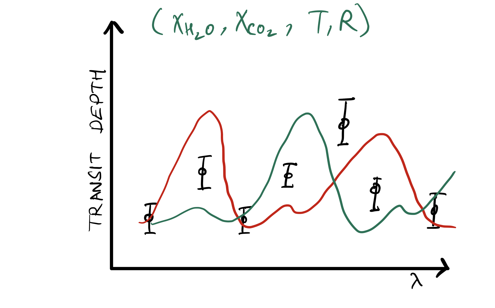

On this page are some cartoony illustrations I have made for explaining the transit method, transmission spectroscopy and the process of atmospheric retrieval.
Please feel to use these if you wish to (Kindly cite the webpage and me if you do so)
CC-BY: 
Exoplanet Sketches by Agnibha Banerjee is licensed under a Creative Commons Attribution 4.0 International License.
Based on a work at https://riobanerjee.github.io
A transit lightcurve.
A transit lightcurve split into different wavelengths.
A transmission spectrum with some rough features marked.
An illustration of the transmission spectroscopy geometry with JWST (Made using Canva).
Only data
First Model
Second Model
Third Model - Fits
Corner Plot